Functions and Function Notation
A jetliner changes altitude as its distance from the starting point of a flight increases. The weight of a growing child increases with time. In each case, one quantity depends on another. There is a relationship between the two quantities that we can describe, analyze, and use to make predictions. In this section, we will analyze such relationships.
Determining Whether a Relation Represents a Function
A relation is a set of ordered pairs. The set of the first components of each ordered pair is called the domain and the set of the second components of each ordered pair is called the range. Consider the following set of ordered pairs. The first numbers in each pair are the first five natural numbers. The second number in each pair is twice that of the first.
The domain is The range is
Note that each value in the domain is also known as an input value, or independent variable, and is often labeled with the lowercase letter Each value in the range is also known as an output value, or dependent variable, and is often labeled lowercase letter
A function is a relation that assigns a single value in the range to each value in the domain. In other words, no x-values are repeated. For our example that relates the first five natural numbers to numbers double their values, this relation is a function because each element in the domain, is paired with exactly one element in the range,
Now let’s consider the set of ordered pairs that relates the terms “even” and “odd” to the first five natural numbers. It would appear as
Notice that each element in the domain, is not paired with exactly one element in the range, For example, the term “odd” corresponds to three values from the range, and the term “even” corresponds to two values from the range, This violates the definition of a function, so this relation is not a function.
Figure 1 compares relations that are functions and not functions.

Determining If Menu Price Lists Are Functions
The coffee shop menu, shown in Figure 2 consists of items and their prices.
- ⓐ Is price a function of the item?
- ⓑ Is the item a function of the price?

Solution
- ⓐ Let’s begin by considering the input as the items on the menu. The output values are then the prices. See Figure 3.

Figure 3 Each item on the menu has only one price, so the price is a function of the item.
- ⓑ Two items on the menu have the same price. If we consider the prices to be the input values and the items to be the output, then the same input value could have more than one output associated with it. See Figure 4.
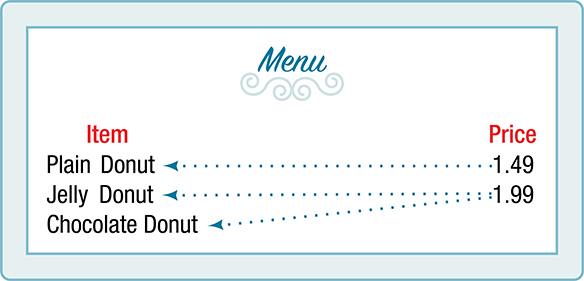
Figure 4 Therefore, the item is a not a function of price.
Determining If Class Grade Rules Are Functions
In a particular math class, the overall percent grade corresponds to a grade point average. Is grade point average a function of the percent grade? Is the percent grade a function of the grade point average? Table 1 shows a possible rule for assigning grade points.
| Percent grade | 0–56 | 57–61 | 62–66 | 67–71 | 72–77 | 78–86 | 87–91 | 92–100 |
| Grade point average | 0.0 | 1.0 | 1.5 | 2.0 | 2.5 | 3.0 | 3.5 | 4.0 |
Solution
For any percent grade earned, there is an associated grade point average, so the grade point average is a function of the percent grade. In other words, if we input the percent grade, the output is a specific grade point average.
In the grading system given, there is a range of percent grades that correspond to the same grade point average. For example, students who receive a grade point average of 3.0 could have a variety of percent grades ranging from 78 all the way to 86. Thus, percent grade is not a function of grade point average.
Using Function Notation
Once we determine that a relationship is a function, we need to display and define the functional relationships so that we can understand and use them, and sometimes also so that we can program them into computers. There are various ways of representing functions. A standard function notation is one representation that facilitates working with functions.
To represent “height is a function of age,” we start by identifying the descriptive variables for height and for age. The letters and are often used to represent functions just as we use and to represent numbers and and to represent sets.
Remember, we can use any letter to name the function; the notation shows us that depends on The value must be put into the function to get a result. The parentheses indicate that age is input into the function; they do not indicate multiplication.
We can also give an algebraic expression as the input to a function. For example means “first add a and b, and the result is the input for the function f.” The operations must be performed in this order to obtain the correct result.
Using Function Notation for Days in a Month
Use function notation to represent a function whose input is the name of a month and output is the number of days in that month. Assume that the domain does not include leap years.
Solution
The number of days in a month is a function of the name of the month, so if we name the function we write or The name of the month is the input to a “rule” that associates a specific number (the output) with each input.
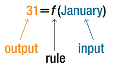
For example, because March has 31 days. The notation reminds us that the number of days, (the output), is dependent on the name of the month, (the input).
Interpreting Function Notation
A function gives the number of police officers, in a town in year What does represent?
Solution
When we read we see that the input year is 2005. The value for the output, the number of police officers is 300. Remember, The statement tells us that in the year 2005 there were 300 police officers in the town.
Representing Functions Using Tables
A common method of representing functions is in the form of a table. The table rows or columns display the corresponding input and output values. In some cases, these values represent all we know about the relationship; other times, the table provides a few select examples from a more complete relationship.
Table 3 lists the input number of each month (January = 1, February = 2, and so on) and the output value of the number of days in that month. This information represents all we know about the months and days for a given year (that is not a leap year). Note that, in this table, we define a days-in-a-month function where identifies months by an integer rather than by name.
| Month number, (input) | 1 | 2 | 3 | 4 | 5 | 6 | 7 | 8 | 9 | 10 | 11 | 12 |
| Days in month, (output) | 31 | 28 | 31 | 30 | 31 | 30 | 31 | 31 | 30 | 31 | 30 | 31 |
Table 4 defines a function Remember, this notation tells us that is the name of the function that takes the input and gives the output
| 1 | 2 | 3 | 4 | 5 | |
| 8 | 6 | 7 | 6 | 8 |
Table 5 displays the age of children in years and their corresponding heights. This table displays just some of the data available for the heights and ages of children. We can see right away that this table does not represent a function because the same input value, 5 years, has two different output values, 40 in. and 42 in.
| Age in years, (input) | 5 | 5 | 6 | 7 | 8 | 9 | 10 |
| Height in inches, (output) | 40 | 42 | 44 | 47 | 50 | 52 | 54 |
Identifying Tables that Represent Functions
Which table, Table 6, Table 7, or Table 8, represents a function (if any)?
| Input | Output |
|---|---|
| 2 | 1 |
| 5 | 3 |
| 8 | 6 |
| Input | Output |
|---|---|
| –3 | 5 |
| 0 | 1 |
| 4 | 5 |
| Input | Output |
|---|---|
| 1 | 0 |
| 5 | 2 |
| 5 | 4 |
Solution
Table 6 and Table 7 define functions. In both, each input value corresponds to exactly one output value. Table 8 does not define a function because the input value of 5 corresponds to two different output values.
When a table represents a function, corresponding input and output values can also be specified using function notation.
The function represented by Table 6 can be represented by writing
Similarly, the statements
represent the function in Table 7.
Table 8 cannot be expressed in a similar way because it does not represent a function.
Finding Input and Output Values of a Function
When we know an input value and want to determine the corresponding output value for a function, we evaluate the function. Evaluating will always produce one result because each input value of a function corresponds to exactly one output value.
When we know an output value and want to determine the input values that would produce that output value, we set the output equal to the function’s formula and solve for the input. Solving can produce more than one solution because different input values can produce the same output value.
Evaluation of Functions in Algebraic Forms
When we have a function in formula form, it is usually a simple matter to evaluate the function. For example, the function can be evaluated by squaring the input value, multiplying by 3, and then subtracting the product from 5.
Evaluating Functions at Specific Values
Evaluate at:
- ⓐ
- ⓑ
- ⓒ
- ⓓ Now evaluate
Solution
Replace the in the function with each specified value.
- ⓐ Because the input value is a number, 2, we can use simple algebra to simplify.
- ⓑ In this case, the input value is a letter so we cannot simplify the answer any further.
- ⓒ With an input value of we must use the distributive property.
- ⓓ In this case, we apply the input values to the function more than once, and then perform algebraic operations on the result. We already found that
and we know that
Now we combine the results and simplify.
Evaluating Functions
Given the function evaluate
Solution
To evaluate we substitute the value 4 for the input variable in the given function.
Therefore, for an input of 4, we have an output of 24.
Solving Functions
Given the function solve for
Solution
If either or (or both of them equal 0). We will set each factor equal to 0 and solve for in each case.
This gives us two solutions. The output when the input is either or We can also verify by graphing as in Figure 6. The graph verifies that and
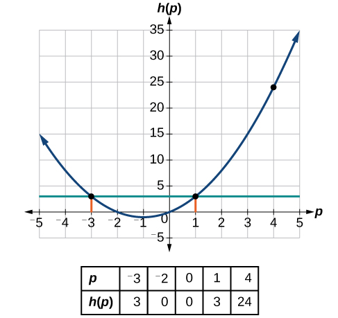
Evaluating Functions Expressed in Formulas
Some functions are defined by mathematical rules or procedures expressed in equation form. If it is possible to express the function output with a formula involving the input quantity, then we can define a function in algebraic form. For example, the equation expresses a functional relationship between and We can rewrite it to decide if is a function of
Finding the Algebraic Form of a Function
Express the relationship as a function if possible.
Solution
To express the relationship in this form, we need to be able to write the relationship where is a function of which means writing it as
Therefore, as a function of is written as
Analysis
It is important to note that not every relationship expressed by an equation can also be expressed as a function with a formula.
Expressing the Equation of a Circle as a Function
Does the equation represent a function with as input and as output? If so, express the relationship as a function
Solution
First we subtract from both sides.
We now try to solve for in this equation.
We get two outputs corresponding to the same input, so this relationship cannot be represented as a single function
Evaluating a Function Given in Tabular Form
As we saw above, we can represent functions in tables. Conversely, we can use information in tables to write functions, and we can evaluate functions using the tables. For example, how well do our pets recall the fond memories we share with them? There is an urban legend that a goldfish has a memory of 3 seconds, but this is just a myth. Goldfish can remember up to 3 months, while the beta fish has a memory of up to 5 months. And while a puppy’s memory span is no longer than 30 seconds, the adult dog can remember for 5 minutes. This is meager compared to a cat, whose memory span lasts for 16 hours.
The function that relates the type of pet to the duration of its memory span is more easily visualized with the use of a table. See Table 10.http://www.kgbanswers.com/how-long-is-a-dogs-memory-span/4221590. Accessed 3/24/2014.
| Pet | Memory span in hours |
|---|---|
| Puppy | 0.008 |
| Adult dog | 0.083 |
| Cat | 16 |
| Goldfish | 2160 |
| Beta fish | 3600 |
At times, evaluating a function in table form may be more useful than using equations. Here let us call the function The domain of the function is the type of pet and the range is a real number representing the number of hours the pet’s memory span lasts. We can evaluate the function at the input value of “goldfish.” We would write Notice that, to evaluate the function in table form, we identify the input value and the corresponding output value from the pertinent row of the table. The tabular form for function seems ideally suited to this function, more so than writing it in paragraph or function form.
Evaluating and Solving a Tabular Function
Using Table 11,
- ⓐ Evaluate
- ⓑ Solve
| 1 | 2 | 3 | 4 | 5 | |
| 8 | 6 | 7 | 6 | 8 |
Solution
- ⓐEvaluating means determining the output value of the function for the input value of The table output value corresponding to is 7, so
- ⓑSolving means identifying the input values, that produce an output value of 6. The table below shows two solutions: and
| 1 | 2 | 3 | 4 | 5 | |
| 8 | 6 | 7 | 6 | 8 |
When we input 2 into the function our output is 6. When we input 4 into the function our output is also 6.
Finding Function Values from a Graph
Evaluating a function using a graph also requires finding the corresponding output value for a given input value, only in this case, we find the output value by looking at the graph. Solving a function equation using a graph requires finding all instances of the given output value on the graph and observing the corresponding input value(s).

Solution
- ⓐ To evaluate locate the point on the curve where then read the y-coordinate of that point. The point has coordinates so See Figure 8.

Figure 8 - ⓑ To solve we find the output value on the vertical axis. Moving horizontally along the line we locate two points of the curve with output value and These points represent the two solutions to or This means and or when the input is or the output is See Figure 9.

Figure 9
Determining Whether a Function is One-to-One
Some functions have a given output value that corresponds to two or more input values. For example, in the stock chart shown in the figure at the beginning of this chapter, the stock price was $1000 on five different dates, meaning that there were five different input values that all resulted in the same output value of $1000.
However, some functions have only one input value for each output value, as well as having only one output for each input. We call these functions one-to-one functions. As an example, consider a school that uses only letter grades and decimal equivalents, as listed in Table 12.
| Letter grade | Grade point average |
|---|---|
| A | 4.0 |
| B | 3.0 |
| C | 2.0 |
| D | 1.0 |
This grading system represents a one-to-one function, because each letter input yields one particular grade point average output and each grade point average corresponds to one input letter.
To visualize this concept, let’s look again at the two simple functions sketched in Figure 1(a) and Figure 1(b). The function in part (a) shows a relationship that is not a one-to-one function because inputs and both give output The function in part (b) shows a relationship that is a one-to-one function because each input is associated with a single output.
Determining Whether a Relationship Is a One-to-One Function
Is the area of a circle a function of its radius? If yes, is the function one-to-one?
Solution
A circle of radius has a unique area measure given by so for any input, there is only one output, The area is a function of radius
If the function is one-to-one, the output value, the area, must correspond to a unique input value, the radius. Any area measure is given by the formula Because areas and radii are positive numbers, there is exactly one solution: So the area of a circle is a one-to-one function of the circle’s radius.
Using the Vertical Line Test
As we have seen in some examples above, we can represent a function using a graph. Graphs display a great many input-output pairs in a small space. The visual information they provide often makes relationships easier to understand. By convention, graphs are typically constructed with the input values along the horizontal axis and the output values along the vertical axis.
The most common graphs name the input value and the output value and we say is a function of or when the function is named The graph of the function is the set of all points in the plane that satisfies the equation If the function is defined for only a few input values, then the graph of the function is only a few points, where the x-coordinate of each point is an input value and the y-coordinate of each point is the corresponding output value. For example, the black dots on the graph in Figure 10 tell us that and However, the set of all points satisfying is a curve. The curve shown includes and because the curve passes through those points.
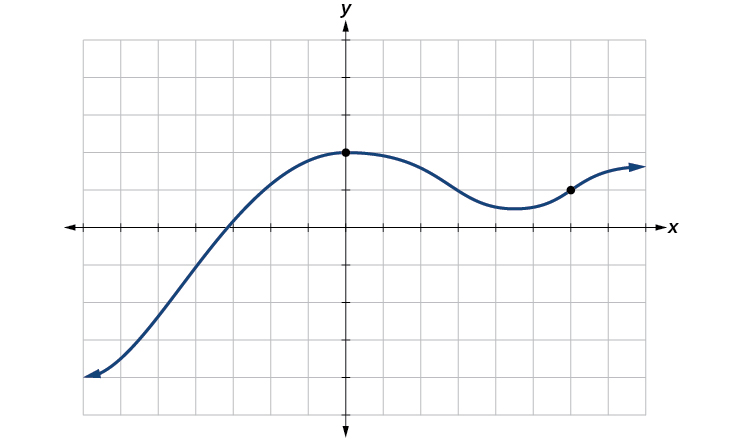
The vertical line test can be used to determine whether a graph represents a function. If we can draw any vertical line that intersects a graph more than once, then the graph does not define a function because a function has only one output value for each input value. See Figure 11.
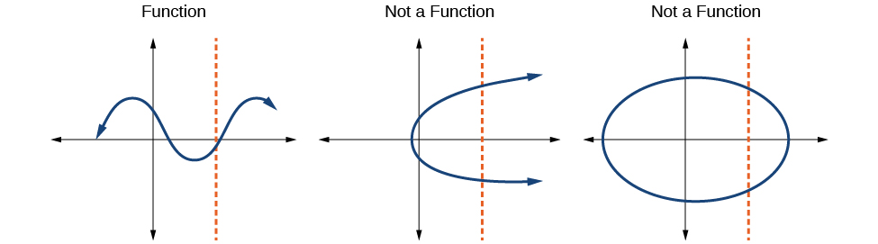
Applying the Vertical Line Test
Which of the graphs in Figure 12 represent(s) a function
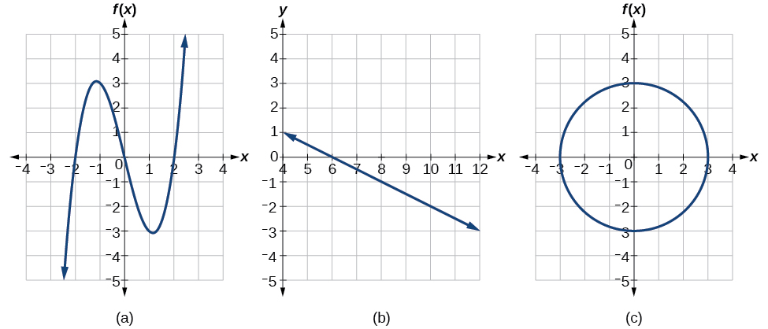
Solution
If any vertical line intersects a graph more than once, the relation represented by the graph is not a function. Notice that any vertical line would pass through only one point of the two graphs shown in parts (a) and (b) of Figure 12. From this we can conclude that these two graphs represent functions. The third graph does not represent a function because, at most x-values, a vertical line would intersect the graph at more than one point, as shown in Figure 13.
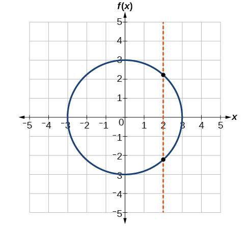
Using the Horizontal Line Test
Once we have determined that a graph defines a function, an easy way to determine if it is a one-to-one function is to use the horizontal line test. Draw horizontal lines through the graph. If any horizontal line intersects the graph more than once, then the graph does not represent a one-to-one function.
Applying the Horizontal Line Test
Consider the functions shown in Figure 12(a) and Figure 12(b). Are either of the functions one-to-one?
Solution
The function in Figure 12(a) is not one-to-one. The horizontal line shown in Figure 15 intersects the graph of the function at two points (and we can even find horizontal lines that intersect it at three points.)
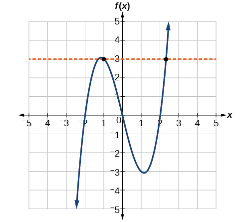
The function in Figure 12(b) is one-to-one. Any horizontal line will intersect a diagonal line at most once.
Identifying Basic Toolkit Functions
In this text, we will be exploring functions—the shapes of their graphs, their unique characteristics, their algebraic formulas, and how to solve problems with them. When learning to read, we start with the alphabet. When learning to do arithmetic, we start with numbers. When working with functions, it is similarly helpful to have a base set of building-block elements. We call these our “toolkit functions,” which form a set of basic named functions for which we know the graph, formula, and special properties. Some of these functions are programmed to individual buttons on many calculators. For these definitions we will use as the input variable and as the output variable.
We will see these toolkit functions, combinations of toolkit functions, their graphs, and their transformations frequently throughout this book. It will be very helpful if we can recognize these toolkit functions and their features quickly by name, formula, graph, and basic table properties. The graphs and sample table values are included with each function shown in Table 13.
| Toolkit Functions | ||
|---|---|---|
| Name | Function | Graph |
| Constant | where is a constant |

|
| Identity |
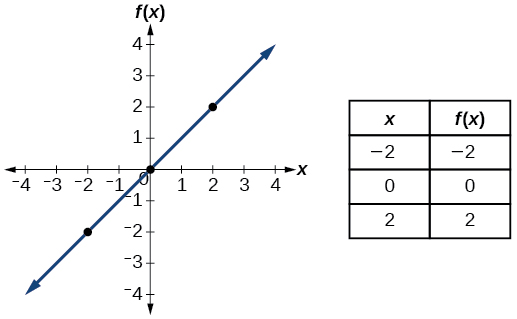 |
|
| Absolute value |
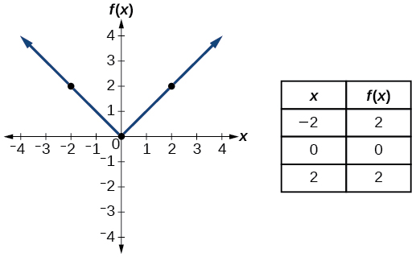 |
|
| Quadratic |

|
|
| Cubic |

|
|
| Reciprocal |

|
|
| Reciprocal squared |
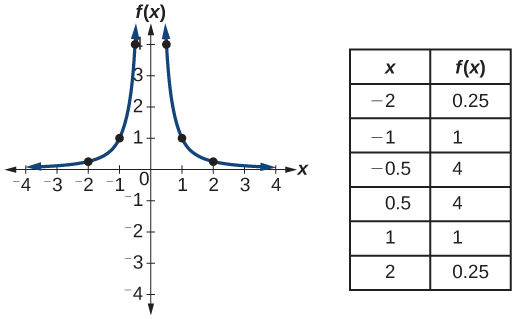 |
|
| Square root |

|
|
| Cube root |
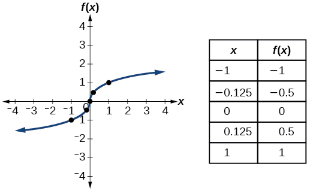 |
|
Key Equations
| Constant function | where is a constant |
| Identity function | |
| Absolute value function | |
| Quadratic function | |
| Cubic function | |
| Reciprocal function | |
| Reciprocal squared function | |
| Square root function | |
| Cube root function |
Key Concepts
- A relation is a set of ordered pairs. A function is a specific type of relation in which each domain value, or input, leads to exactly one range value, or output. See Example 1 and Example 2.
- Function notation is a shorthand method for relating the input to the output in the form See Example 3 and Example 4.
- In tabular form, a function can be represented by rows or columns that relate to input and output values. See Example 5.
- To evaluate a function, we determine an output value for a corresponding input value. Algebraic forms of a function can be evaluated by replacing the input variable with a given value. See Example 6 and Example 7.
- To solve for a specific function value, we determine the input values that yield the specific output value. See Example 8.
- An algebraic form of a function can be written from an equation. See Example 9 and Example 10.
- Input and output values of a function can be identified from a table. See Example 11.
- Relating input values to output values on a graph is another way to evaluate a function. See Example 12.
- A function is one-to-one if each output value corresponds to only one input value. See Example 13.
- A graph represents a function if any vertical line drawn on the graph intersects the graph at no more than one point. See Example 14.
- The graph of a one-to-one function passes the horizontal line test. See Example 15.
Section Exercises
Verbal
What is the difference between a relation and a function?
Solution
A relation is a set of ordered pairs. A function is a special kind of relation in which no two ordered pairs have the same first coordinate.
What is the difference between the input and the output of a function?
Why does the vertical line test tell us whether the graph of a relation represents a function?
Solution
When a vertical line intersects the graph of a relation more than once, that indicates that for that input there is more than one output. At any particular input value, there can be only one output if the relation is to be a function.
How can you determine if a relation is a one-to-one function?
Why does the horizontal line test tell us whether the graph of a function is one-to-one?
Solution
When a horizontal line intersects the graph of a function more than once, that indicates that for that output there is more than one input. A function is one-to-one if each output corresponds to only one input.
Algebraic
For the following exercises, determine whether the relation represents a function.
Solution
function
For the following exercises, determine whether the relation represents as a function of
Solution
function
Solution
function
Solution
function
Solution
function
Solution
function
Solution
function
Solution
function
Solution
function
Solution
not a function
For the following exercises, evaluate at the indicated values
Solution
Solution
Solution
Given the function evaluate
Given the function evaluate
Solution
Given the function
- ⓐ Evaluate
- ⓑ Solve
Given the function
- ⓐ Evaluate
- ⓑ Solve
Solution
- ⓐ
- ⓑ
Given the function
- ⓐ Evaluate
- ⓑ Solve
Given the function
- ⓐ Evaluate
- ⓑ Solve
Solution
- ⓐ
- ⓑ or
Given the function
- ⓐ Evaluate
- ⓑ Solve
Consider the relationship
- ⓐ Write the relationship as a function
- ⓑ Evaluate
- ⓒ Solve
Solution
- ⓐ
- ⓑ
- ⓒ
Graphical
For the following exercises, use the vertical line test to determine which graphs show relations that are functions.
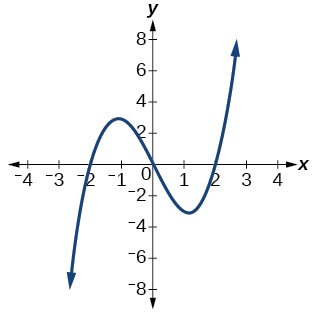
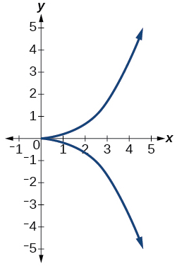
Solution
not a function
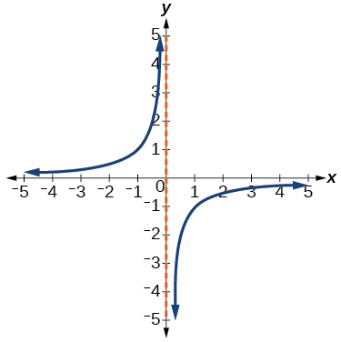

Solution
function
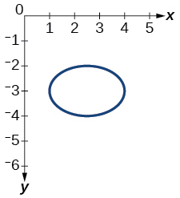
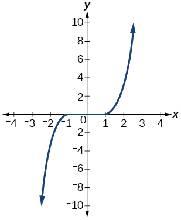
Solution
function
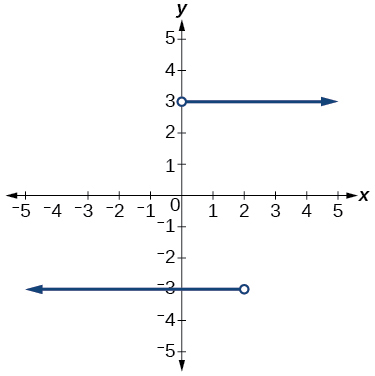
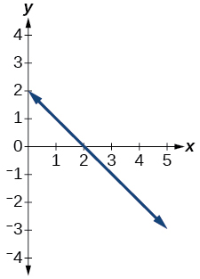
Solution
function


Solution
function

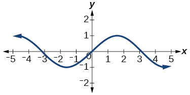
Solution
function
- ⓐ Evaluate
- ⓑ Solve for
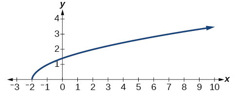
- ⓐ Evaluate
- ⓑ Solve for
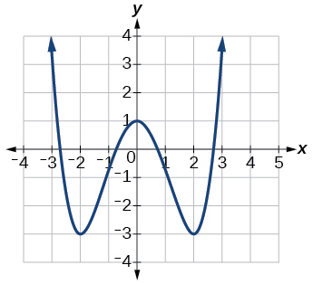
Solution
- ⓐ
- ⓑ or
- ⓐ Evaluate
- ⓑ Solve for

For the following exercises, determine if the given graph is a one-to-one function.

Solution
not a function so it is also not a one-to-one function


Solution
one-to-one function


Solution
function, but not one-to-one
Numeric
For the following exercises, determine whether the relation represents a function.
Solution
function
For the following exercises, determine if the relation represented in table form represents as a function of
| 5 | 10 | 15 | |
| 3 | 8 | 14 |
Solution
function
| 5 | 10 | 15 | |
| 3 | 8 | 8 |
| 5 | 10 | 10 | |
| 3 | 8 | 14 |
Solution
not a function
For the following exercises, use the function represented in Table 14.
| x | 0 | 1 | 2 | 3 | 4 | 5 | 6 | 7 | 8 | 9 |
| f(x) | 74 | 28 | 1 | 53 | 56 | 3 | 36 | 45 | 14 | 47 |
Evaluate
Solve
Solution
For the following exercises, evaluate the function at the values and
Solution
Solution
Solution
For the following exercises, evaluate the expressions, given functions and
Solution
20
Technology
For the following exercises, graph on the given domain. Determine the corresponding range. Show each graph.
Solution
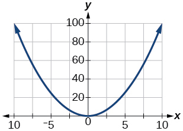
For the following exercises, graph on the given domain. Determine the corresponding range. Show each graph.
Solution

Solution

For the following exercises, graph on the given domain. Determine the corresponding range. Show each graph.
Solution
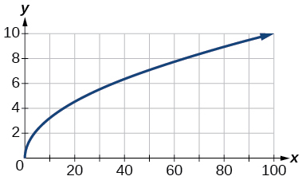
For the following exercises, graph on the given domain. Determine the corresponding range. Show each graph.
Solution

Solution
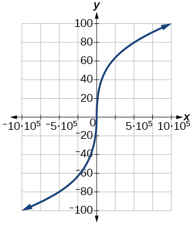
Real-World Applications
The amount of garbage, produced by a city with population is given by is measured in tons per week, and is measured in thousands of people.
- ⓐ The town of Tola has a population of 40,000 and produces 13 tons of garbage each week. Express this information in terms of the function
- ⓑ Explain the meaning of the statement
The number of cubic yards of dirt, needed to cover a garden with area square feet is given by
- ⓐ A garden with area 5000 ft2 requires 50 yd3 of dirt. Express this information in terms of the function
- ⓑ Explain the meaning of the statement
Solution
- ⓐ
- ⓑ The number of cubic yards of dirt required for a garden of 100 square feet is 1.
Let be the number of ducks in a lake years after 1990. Explain the meaning of each statement:
- ⓐ
- ⓑ
Let be the height above ground, in feet, of a rocket seconds after launching. Explain the meaning of each statement:
Solution
- ⓐ The height of a rocket above ground after 1 second is 200 ft.
- ⓑ the height of a rocket above ground after 2 seconds is 350 ft.
Show that the function is not one-to-one.
Analysis
Note that the inputs to a function do not have to be numbers; function inputs can be names of people, labels of geometric objects, or any other element that determines some kind of output. However, most of the functions we will work with in this book will have numbers as inputs and outputs.